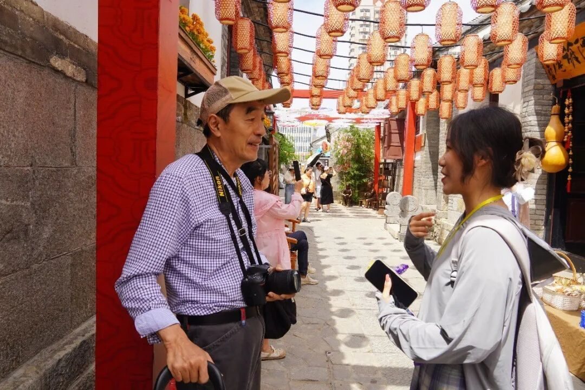
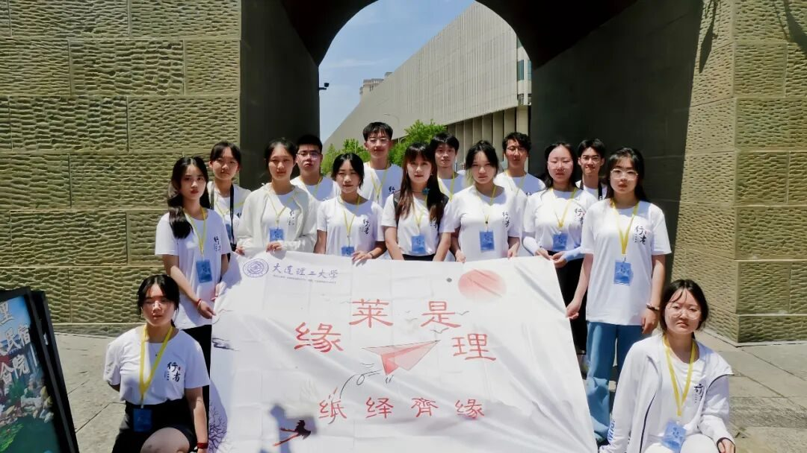
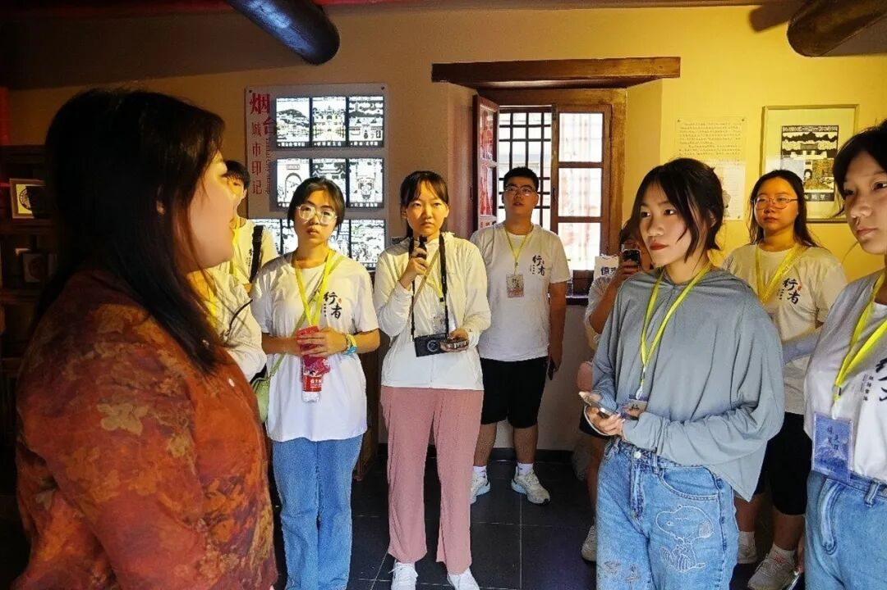
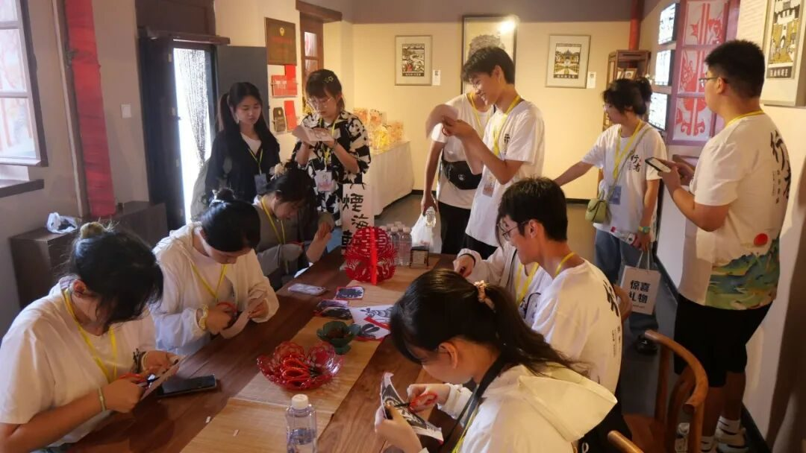
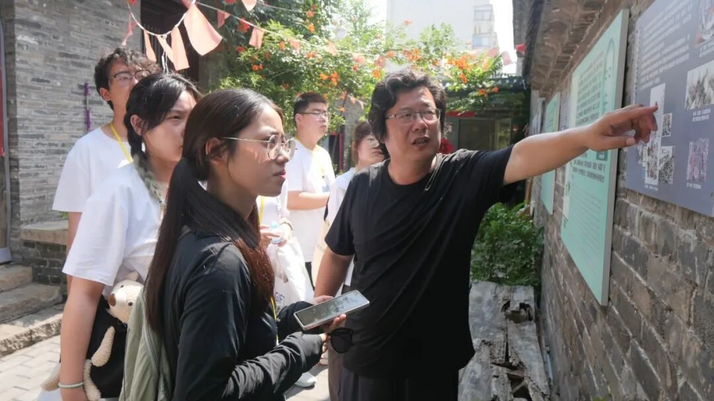
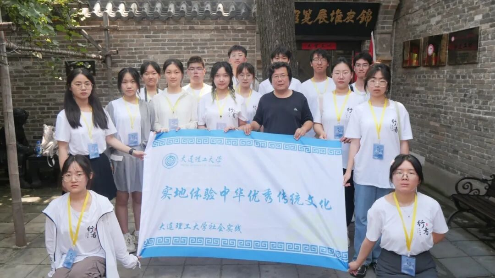

寻溯齐鲁 纸艺风情

为全面贯彻习近平新时代中国特色社会主义思想，深入学习宣传贯彻党的二十大精神，紧密结合共青团中央关于开展“三下乡”“返家乡”等社会实践活动的通知要求， “缘莱是理·纸绎齊缘”实践团结合对党的二十大精神的学习贯彻，响应挖掘“山东文脉”号召，探寻山东省纸艺非遗。
实践团15名同学于7月15日至19日奔赴山东省烟台市、潍坊市、淄博市，通过实地走访及问卷发放等方式开展寻迹纸质非遗之旅。

纸韵悠长 剪下生花
实践第一站，同学们采访到了烟台剪纸传承人梁巧艳老师，通过传承人的亲身讲述了解了这些珍贵非遗文化的起源与传承，制作与发展，非遗文化深厚的历史底蕴和珍贵的文化价值令同学们动容。

采访梁巧艳老师
在谈及非遗文化的创新发展时，烟台剪纸传承人梁巧艳老师回答道：“剪纸早已融入日常生活，紧跟时代发展的步伐；没有创新，就没有传承，创新就是最好的传承”。“问渠那得清如许，为有源头活水来”，梁老师表示烟台剪纸的传承和发展需要年轻人的助力，唯有新鲜血液的加入，这门技艺才能赓续传承，薪火永燃。

同学们在老师指导下体验剪纸
纸上云帆 鸢续匠心
实践第二站，同学们来到世界风筝文化交流中心鸢都潍坊，造访潍坊同兴风筝工厂和杨家埠民间艺术大观园，实践团了解了不同种类风筝的制作过程和传承情况，深入了解风筝发展状况，探索扩大风筝市场的方法，体验风筝文化的魅力。
在采访中同学们了解到：近年来，潍坊风筝受到了当地政府的高度重视，在挖掘、抢救、继承、保护等方面做了许多卓有成效的工作。与此同时，自媒体的发展壮大也让更多人了解、喜欢上潍坊风筝。
采访潍坊同兴风筝工厂和杨红卫老师
（滑动查看更多）
纸承新生 刻绘乾坤
实践第三站，同学们赶着“淄博”的热度，开启了探寻淄博刻纸的非遗文化之旅，并且邀请到淄博刻纸传承人王涛老师和朱孝杭老师来介绍、分享他们的“工匠”故事。
采访刻纸传承人
（滑动查看更多）
朱孝杭老师根据我们提供的大工吉祥物印出刻纸图案供同学们亲身体验，同学们在朱孝杭老师的指导下进行创作的同时，团队内同学接受了当地电视台的采访，将自己对非遗文化的理解和认识娓娓道来。
朱孝杭老师与同学们
（滑动查看更多）
纸印古迹 锦灰映像
实践的最后一天，实践团来到淄博周村锦灰堆展览馆，采访了锦灰堆传承人耿学知老师。耿学知老师向同学们介绍了锦灰堆文化深厚的历史底蕴：锦灰堆这一艺术形式不仅具有艺术观赏价值，也对考古有巨大参考贡献，如浙江省博物馆所藏的六舟和尚的《百岁图》中的两枚俄国古币，可以侧面说明了我国在清代就与俄国有密切的贸易。

耿学知老师为同学们讲解
在采访过程中，同学们重点向耿老师了解这项非遗技术的传承情况，老师认为其形势严峻。锦灰堆制作难度大，耗时长，对传承者的要求极高，不仅要精通国画，还要精通各类字体书法，目前还没有胜任者可以接续传承，对此情形老师十分担忧，但表示会尽自己最大努力发扬传承锦灰堆文化。

耿学知老师与同学们合影
寻溯齐鲁 纸绎齊缘
除专访外，实践团还分别在烟台所城里、潍坊杨家埠民间艺术大观园和淄博八大局进行了街坊调查，通过与当地居民交流，了解非物文化现状和影响，感受古老文化在生活中的传承，了解到不同年龄段对非遗文化不同程度的认识和看法。
同学们在街访、发放问卷
（滑动查看更多）
为期5天的实践活动，实践团深入了解了剪纸、风筝、刻纸和锦灰堆等纸质非遗文化，探寻非遗手艺人的坚守匠心，感悟非遗背后蕴含的文化内涵，感受其独特的艺术价值和传承困境。为保护和传承非物质文化遗产贡献青年智慧，为非遗文化的传承和发展贡献大工力量！

一起探索纸韵山东

来源 | 行者无疆实践团
文字 | 崔雨琪
图片 | 行者无疆实践团
排版 | 崔雨琪
审核 | 崔雨琪 杨婧葳